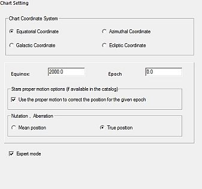
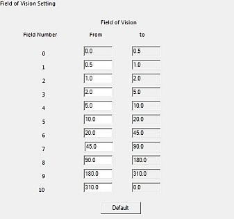

Chart, Coordinates Setting
From the menu: Setup → Chart, Coordinates
The Chart, Coordinates Setting has six tabs:
Chart, Coordinates
Chart Setting
 Here, you can specify the coordinate system used for the chart.
The four available systems are:
Here, you can specify the coordinate system used for the chart.
The four available systems are:
- Equatorial coordinates
- Azimuthal coordinates
- Galactic coordinates
- Ecliptic coordinates
Type of coordinates
Precession, nutation and aberation recognition Your choice here determines which type of coordinates SkyCharts will display for a selected object on the status bar, on the bottom of the chart. If you don't check the Expert mode, you can choose in the groupbox Type of coordinates from four options:
- Apparent true equator, …
- Mean of the date …
- Mean J2000 …
- Astrometric J2000 …

In Expert mode you can specify more details :
{kind=link}
- Equinox year (from -20000 to 20000)
- Epoch year (from -20000 to 20000)
- Proper motion checkbox to correct positions for the given epoch
- Mean position or True position for Nutation and aberration.
Fast ways to make simple changes to the chart coordination system are from the menu by Chart → Coordinate Sytem → [Your Choice], or directly on the chart by the icons in coordinate system group.
Field of Vision
 Here you can specify eleven ranges as the Field of Vision (numbered from 0 to 10).
{kind=link}
For each range you can specify the minimum FOV in degrees, which automatically will become the maximum for the preceding range.
The first range minimum is 0.0° and last range maximum is 360° (which funny enough appears as 0.0°), these values cannot be modified.
These ranges are listed at bottom of all the Catalog dialog box tabs and also are used with the Projection, Object Filter and Grid spacing tabs.
Changing the FOV itself can be done from the menu by Chart → Field of Vision or directly on the chart by the icons in the field of vison group. A very precise FOV can be manually set by the FOV part in the dialog box from the menu View → Field of Vision (FOV).
Projection
 For every FOV range you can choose from four projection types:
For every FOV range you can choose from four projection types:
- ARC Arc length. This is the default projection up to 180°. It corresponds to the projection of a Schmidt camera.
- TAN Tangent. Corresponds to the projection of a picture obtained with a telescope or a photographic lens. The tangent projection has a great distortion for fields larger than 45° and diverge for 90°
- SIN Sine. Used to display images in radio-astronomy. The sine projection overlaps at more than 90°.
- CAR Cartesian. The projection between 180° and 360°. It is of no great interest, apart from the fact that it can display very large field of views.
 by E. Griessen, AIPS memo 27
by E. Griessen, AIPS memo 27
Object Filter
 By this tab you can configure magnitude limits to display stars and deep sky objects based upon the FOV of your chart.
By this tab you can configure magnitude limits to display stars and deep sky objects based upon the FOV of your chart.
The Stars Filter can be:
- disabled. (only practical with the smaller FOVs),
- automatic. By this you can specify a magnitude as Naked eye reference,
- manual. Now you can specify a magnitude limit for every FOV range.
A funny excercise: There's no technical problem to disable the stars filter in combination with a large active star catalog (i.e. HST GSC), a high value for field number max (i.e. 6) and a FOV of 20 degrees. Now you can see why a disabled Stars filter in a large FOV is not very convenient.

Deep Sky Filter can be:
- disabled (only practical with the smaller FOVs),
- manual. Here you can specify the magnitude limit for every FOV range.
You can also filter large deep sky objects specifying the maximum dimension in minutes.
Grid Spacing
 By this tab you can set the grid spacing for every FOV range.
By this tab you can set the grid spacing for every FOV range.
- Degree is for the spacing altitude or declination direction
- Hour is for the azimuth or right ascension direction
You can enable or disable the grid display for every FOV range.
You can enable or disable the display of a compass, you also can adjust its size or disable it.
You can enable or disable the display of grids from the menu by Chart → Lines / Grid → [Show coordinate grid/add equatorial grid]
Object List Setting
 By this tab, you determine which object types are to be filtered from your chart to your Object List.
Click on the
By this tab, you determine which object types are to be filtered from your chart to your Object List.
Click on the  icon from the main bar to retrieve your filtered list of objects displayed on the chart.
icon from the main bar to retrieve your filtered list of objects displayed on the chart.